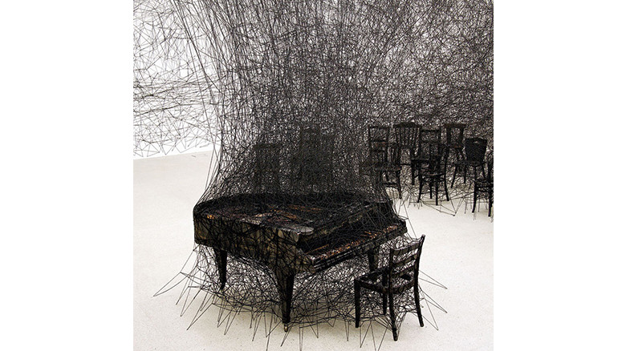

idea

塩田千春
http://www.chiharu-shiota.com/ja/-どんな人
ベルリン在住の現代アーティスト。展示空間全体に糸を張り巡らせるインスタレーション作品を制作しています。
-解説
白い空間に黒いピアノ、黒い椅子が配置され、黒い糸で縛り付けられています。糸が物体と絡まりありながら張られていることで、空間になぐり書きをしているような印象が生まれ、見る人に焦燥感や不安なイメージを与えています。
-好きなところ
見た目が怖いけど迫力あって好きです。